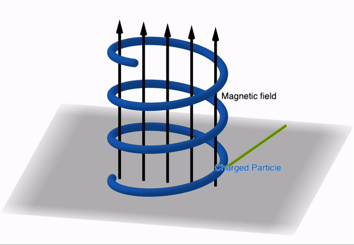
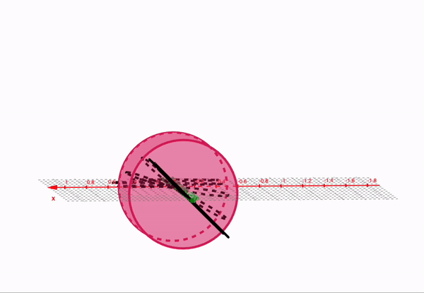
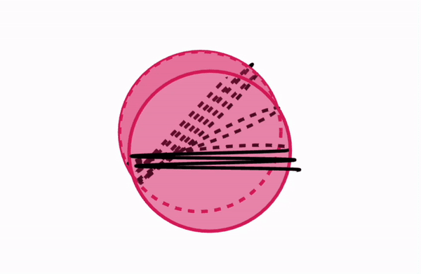

Research
I study the invisible magnetic fields that thread galaxies, using the polarised radio light of giant radio galaxies. The road here ran through particle instruments, the atmosphere, and a gravitational lens. This page is the short tour.
The physics under all of it, in three animations I made in GeoGebra: charged particles spiralling around magnetic fields make polarised radio light, and magnetised gas twists that light on its way to us.



How do you map a magnetic field that no telescope can photograph?
Magnetic fields around giant radio galaxies
Some galaxies launch jets that inflate two enormous lobes of radio-bright plasma, and the light from those lobes is polarised. Magnetised gas along the way twists that polarisation, and the twist grows with wavelength, so the twist itself becomes a map of fields we could never photograph. I make and read these maps across each lobe, with statistics that respect what a radio telescope can and cannot resolve.
The same data ask a second question from the opposite direction: when the light of a distant source passes close to an ordinary galaxy on its way to us, does the gas around that galaxy leave a measurable magnetic fingerprint?
Can a whole galaxy work as the lens of a telescope?
A cosmic lens with three images
A massive galaxy sitting between us and a distant quasar bends the quasar’s light like a lens, splitting it into several images of the same object. My master’s thesis modelled the geometry of one such system, PKS 1830−211, and that model helped pinpoint and confirm its faint third image with the ALMA telescope (Muller, Jaswanth et al. 2020).
How do you weigh the water in the sky?
Reading the atmosphere with lasers and satellites
Before astronomy, I studied the atmosphere itself at ISRO’s National Atmospheric Research Laboratory. A lidar fires laser pulses upward and times the faint echoes off dust, tracing how the mixing layer, the lowest and most stirred part of the atmosphere, grows and collapses through the day. And GPS satellites double as weather instruments: moisture in the air delays their signals ever so slightly, so a network of ground receivers becomes a round-the-clock monitor of the water vapour overhead.
How does an instrument tell one atom from another?
Where it started: instruments and signals
My bachelor’s at the Indian Institute of Space Science and Technology was hands-on: assembling and testing a particle analyser, the part of a mass spectrometer that sorts charged particles by their energy so the instrument can tell atoms apart. A separate project tied data encryption to GPS location, so that a file could be unlocked only at the right place on Earth.
The animated grid behind this page is a visual toy, not a simulation. If you feel like playing with it, open Tune the field in the corner.